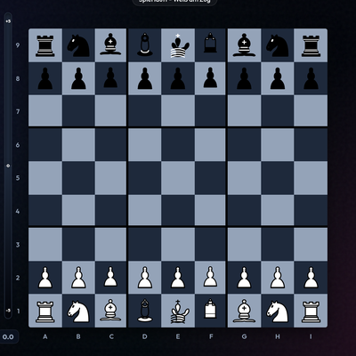
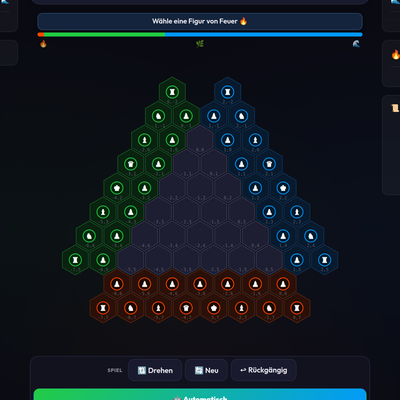

Schach9x9
9×9 Brett mit Feenfiguren, 5 KI-Persönlichkeiten, 3D-Schlachtmodus

Trischach
3-Spieler-Hex-Schach mit Stein-Schere-Papier-Kampf und Elo-Turnieren

9×9 Brett mit Feenfiguren, 5 KI-Persönlichkeiten, 3D-Schlachtmodus

3-Spieler-Hex-Schach mit Stein-Schere-Papier-Kampf und Elo-Turnieren